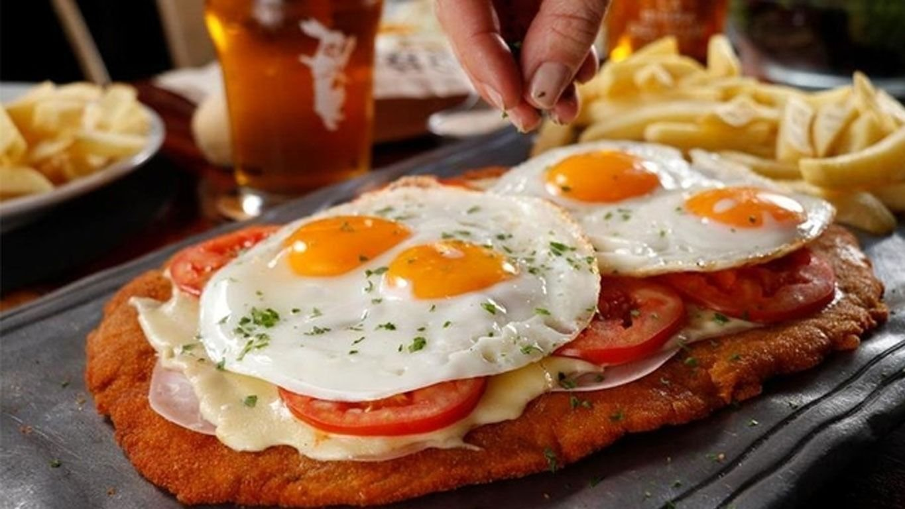

Milanesa 4 Quesos
La Milanesa a los 4 quesos, es un tipo de milanesa a la que simplemente se le agregan diversos tipos de quesos para intensificar su sabor
Precio: $6000
Milanesa a Caballo
Su nombre en la gastronomía “Milanesa a caballo” se da porque se monta un ingrediente sobre otro, permitiendo que a la hora de consumirlos sus sabores se fusionen y se obtenga una mezcla que resalta todo el sabor de la carne
Precio: $7000
Milanesa Napolitana
Durante los años 40, en la cocina de un restaurante llamado NapolI, frente al Estadio Luna Park en la avenida Corrientes, nació un invento casual pero que cambiaría para siempre la relación de los argentinos con esta comida. Para tapar una milanesa quemada, el cocinero le agregó queso, jamón y tomate. El comensal quedó tan sorprendido y satisfecho, que Nápoli incluyó la preparación como especialidad de la casa
Precio: $8000